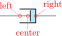
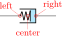
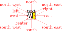

CircuiTikZ
version 1.8.6-unreleased (2026/02/10)
9 Defining new components
Per me si va ne la città dolente,
per me si va ne l’etterno dolore,
per me si va tra la perduta gente.
…
Lasciate ogne speranza, voi ch’intrate.153
Big fat warning: this material is reserved for TeX-hackers; do not delve into this if you have no familiarity with (at least) a bit of core TeX programming and to the basic TikZ layer. You have been warned.
9.1 Suggested setup
Notice: the source code has been reorganized after release 1.2.7; if you are bound to use an older version check the corresponding manual.
The suggested way to start working on a new component is to use the utilities of the CircuiTikZ manual for checking and testing your device. Basically, find (or download) the source code of the last version of CircuiTikZ and find the file ctikzmanutils.sty; copy it in your directory and prepare a file like this:
\documentclass[a4paper, titlepage]{article}
\usepackage{a4wide} %smaller borders
\usepackage[utf8]{inputenc} %not needed since LaTeX 2019
\usepackage[T1]{fontenc}
\parindent=0pt
\parskip=4pt plus 6pt minus 2pt
\usepackage[siunitx, RPvoltages]{circuitikzgit}
\usepackage{ctikzmanutils}
\makeatletter
%% Test things here
% defines
% components
% paths
\makeatother
\begin{document}
\circuitdescbip*{damper}{Mechanical damping}{}(left/135/0.2, right/45/0.2, center/-90/0.3)
\geolrcoord{dampershape, fill=yellow}
\begin{ctikzExample}
\begin{circuitikz}
\draw (0,0) to[R] ++(2,0)
to[damper] ++(2,0);
\end{circuitikz}
\end{ctikzExample}
\end{document}
This will compile to something like this (in this case, we are using a couple of existing components to check everything is OK):
damper: Mechanical damping, type: path-style, fillable, nodename: dampershape. Class: mechanicals.
The command circuitdescbip* is used to show the component description (you can check the definition and the usage looking at ctikzmanutils.sty file, and the \geolrcoord is used to show the main anchors (geographical plus left and right) of the component.
From now on, you can add the new commands for the component between the \makeatletter and \makeatother commands and, modifying the example, check the results.
9.2 Path-style component
Let’s define for example a path style component, like the one suggested by the user @alex on TeX stackexchange site. The component will be a mix of the damper and the spring components already present.
The definitions of the components are in the files pgfcircsomething.tex; they are more or less distributed by the number of terminals, but there are exceptions (for example, switches are in bipoles, even if several of them are tripoles or more…grep is your friend here.
To define the new component we will look into (in this case) pgfcircbipoles.tex; at the start of the block where the components are defined, you can find the relevant definitions (sometime some of the definitions are in pgfcirc.defines.tex, for historical or dependencies reasons). The first step is to check if we can use the definition already existing for similar elements (for coherence of size) or if we need to define new ones; for this you have to check into the we find
\ctikzset{bipoles/spring/height/.initial=.5}
\ctikzset{bipoles/spring/width/.initial=.5}
\ctikzset{bipoles/damper/height/.initial=.35}
\ctikzset{bipoles/damper/length/.initial=.3}
\ctikzset{bipoles/damper/width/.initial=.4}
We will use them; at this stage you can decide to add other parameters if you need them. (Notice, however, than although flexibility is good, these parameters should be described in the manual, otherwise they’re as good as a fixed number in the code).
After that we will copy, for example, the definition of the damper into our code, just changing the name:
%% mechanical resistor - damper
\pgfcircdeclarebipolescaled{mechanicals}
{} % extra anchors
{\ctikzvalof{bipoles/damper/height}} % depth (under the path line)
{viscoe} % name
{\ctikzvalof{bipoles/damper/height}} % height (above the path line)
{\ctikzvalof{bipoles/damper/width}} % width
{
\pgfpathrectanglecorners{\pgfpoint{\ctikzvalof{bipoles/damper/length}\pgf@circ@res@right}{\pgf@circ@res@down}}{\pgfpoint{\pgf@circ@res@right}{\pgf@circ@res@up}}
\pgf@circ@maybefill
% line into the damper
\pgfpathmoveto{\pgfpoint{\pgf@circ@res@left}{\pgf@circ@res@zero}}
\pgfpathlineto{\pgfpoint{\ctikzvalof{bipoles/damper/length}\pgf@circ@res@right}
{\pgf@circ@res@zero}}
\pgfusepath{stroke}
% damper box
\pgf@circ@setlinewidth{bipoles}{\pgfstartlinewidth}
\pgfpathmoveto{\pgfpoint{\pgf@circ@res@left}{\pgf@circ@res@down}}
\pgfpathlineto{\pgfpoint{\pgf@circ@res@right}{\pgf@circ@res@down}}
\pgfpathlineto{\pgfpoint{\pgf@circ@res@right}{\pgf@circ@res@up}}
\pgfpathlineto{\pgfpoint{\pgf@circ@res@left}{\pgf@circ@res@up}}
\pgfsetrectcap
\pgfsetmiterjoin
\pgfusepath{stroke}
% damper vertical element
\pgfpathmoveto{\pgfpoint{\ctikzvalof{bipoles/damper/length}\pgf@circ@res@right}
{.8\pgf@circ@res@down}}
\pgfpathlineto{\pgfpoint{\ctikzvalof{bipoles/damper/length}\pgf@circ@res@right}
{.8\pgf@circ@res@up}}
\pgfsetbuttcap
\pgfusepath{stroke}
}
This \pgfcircdeclarebipolescaled command will define a shape that is named viscoeshape, with all the correct geographical anchors based on the depth, height and width defined in the parameters: in this case we are reusing the ones of the damper shape. Moreover, the element is assigned to the class mechanicals for styling.
To be coherent with the styling, you should use (when needed) the length \pgf@circ@scaled@Rlen as the “basic” length for drawing, using the fill functions (they are defined at the start of the file pgfcirc.defines.tex) to fill and stroke — so that the operation will follow the style parameters and, finally, use the macro \pgf@circ@setlinewidth to set the line thickness: the first argument is the “legacy” class, if you do not want to assign one you can use the pseudo-legacy class none.
The anchors for the bipole (which then set the lengths \pgf@circ@res@left) are already scaled for your use. You can use these lengths (which defines, normally, the geographical anchors of the element) to draw your shapes.
This is not sufficient for using the element in a to[] path command; you need to “activate” it (the definition of the commands are normally in pgfcircpath.tex). In this case the component is simple — look at the definitions if you need to do more complex things.
\pgfcirc@activate@bipole@simple{l}{viscoe}
In the definition above, the {l} parameter means that using the component like to[viscoe=A] will be equivalent to to[viscoe, l=A]; you can also use v or i or f if your component needs it. Now you can show it with:
\circuitdescbip*{viscoe}{Mechanical viscoelastic element}{}(left/135/0.2, right/45/0.2, center/-90/0.3)
\geolrcoord{viscoeshape, fill=yellow}
\begin{ctikzExample}
\begin{circuitikz}
\draw (0,0) to[spring] ++(2,0)
to[viscoe] ++(2,0);
\end{circuitikz}
\end{ctikzExample}
Obviously, at first you just have a component that is the same as the one you copied with another name. It is now just a matter of modifying it so that it has the desired shape; in the example above you can already see the new symbol after the changes.
When doing the drawing in the main argument of the \pgfcircdeclarebipolescaled, things will be set up so that the lengths \pgf@circ@res@right and \pgf@circ@res@up are the \(x\)-\(y\) coordinates of the upper right corner, and \pgf@circ@res@left and \pgf@circ@res@down are the \(x\)-\(y\) coordinates of the lower left corner of your shape. The center coordinate is usually at \((0pt, 0pt)\).
Looking at the implementation of the spring element, one possibility is changing the lines between lines 12 and 16 with:
% spring into the damper
\pgfscope
\pgfpathmoveto{\pgfpoint{\pgf@circ@res@left}{\pgf@circ@res@zero}}
\pgf@circ@setlinewidth{bipoles}{\pgfstartlinewidth}
\pgfsetcornersarced{\pgfpoint{.25\pgf@circ@res@up}{.25\pgf@circ@res@up}}
\pgfpathlineto{\pgfpoint{.75\pgf@circ@res@left}{.75\pgf@circ@res@up}}
\pgfpathlineto{\pgfpoint{.5\pgf@circ@res@left}{-.75\pgf@circ@res@up}}
\pgfpathlineto{\pgfpoint{.25\pgf@circ@res@left}{.75\pgf@circ@res@up}}
\pgfpathlineto{\pgfpoint{0pt}{-.75\pgf@circ@res@up}}
\pgfpathlineto{\pgfpoint{\ctikzvalof{bipoles/damper/length}\pgf@circ@res@right}{.75\pgf@circ@res@up}}
\pgfusepath{stroke}
\endpgfscope
which leads to:
viscoe: Mechanical viscoelastic element, type: path-style, fillable, nodename: viscoeshape. Class: mechanicals.

Now you can check if the voltage labels are correct for your new component:
If you think they are too tight or too loose, you can use a (developer-only) key to adjust the distance:
\begin{circuitikz}
\ctikzset{bipoles/viscoe/voltage/additional shift/.
initial=1}
\draw (0,0) to[spring] ++(2,0)
to[viscoe, v=V] ++(2,0);
\end{circuitikz}
Notice that by default the key bipoles/mybipole/voltage/additional shift is not defined, so if you want to use it you must create it before (this is the meaning of the .initial here).
Now you can save all the code between the \makeatletter and \makeatother in a file and \input{} it for using your special component, or submit the component to the project (see below).
As a final note, notice that the viscoe element is already added to the standard package.
9.3 Node-style component
Adding a node-style component is much more straightforward. Just define it by following examples in, for example, pgfcirctripoles.tex or the other files; be careful that you should define all the geographical anchors of the shape if you want that the TikZ positioning options (like left, above, etc.) behave correctly with your component.
To have a scalable component, for example in the transistors class, you should use something like
\savedmacro{\ctikzclass}{\edef\ctikzclass{transistors}}
\saveddimen{\scaledRlen}{\pgfmathsetlength{\pgf@x}{\ctikzvalof{\ctikzclass/scale}\pgf@circ@Rlen}}
at the start of anchors and macros definition, and use (for example, the exact code will change greatly depending on your component):
\savedanchor\northeast{% upper right
\pgfmathsetlength{\pgf@circ@scaled@Rlen}{\ctikzvalof{\ctikzclass/scale}\pgf@circ@Rlen}
\pgf@y=\pgf@circ@scaled@Rlen
\pgf@y=0.5\pgf@y
\pgf@x=0.3\pgf@y
}
in all the savedanchors.
Then, to draw your component, you should start with154:
\pgf@circ@draw@component{%
\pgf@circ@scaled@Rlen=\scaledRlen
...
}
and then use \pgf@circ@scaled@Rlen (or the anchors) as the default length while you draw it.
The special command \pgf@circ@draw@component will issue a \behindforegroundpath command, and take care of calling the start and end hooks for the component. Notice that, given the use of \behindforegroundpath, you must take care to use the path you define here! The path itself is protected bu a pgfscope (and so also by a TeX group), so local definitions will be reset after exiting.
154 Since v1.5.0; component defined with this mechanism will not be compatible with older CircuiTikZ.
9.3.1 The internal hook system
Since version v1.5.0, before starting the drawing of any component, CircuiTikZ will check for the existence of three different hooks, in the following order (suppose that the shape name is myname, and it has a class myclass:
-
• \ctikz@hook@start@draw@component@myname
-
• \ctikz@hook@start@draw@class@myclass
-
• \ctikz@hook@start@draw@default
The first one that is defined in the current (or outer) scope is used, and the following ones are not used. These hooks can be used to set drawing parameters, or to reset them to a known state: TikZ normally inherit most of the drawing option, but that can lead to surprises (like unexpected arrows, etc.).
In the same way, before leaving \pgf@circ@draw@component, a set of similar hooks (with end instead of start) is tried, with the same logic.
The only predefined hook is \ctikz@hook@start@draw@default, which is set to the equivalent of:
\pgfsetshortenstart{+0pt}\pgfsetshortenend{+0pt}\pgfsetarrows{-}%
\def\pgf@circ@reset@rounded{\pgfsetcornersarced{\pgfpointorigin}}%
which means that, by default, arrows parameters are reset to the default (no shorten, no arrows) and that corners are not rounded. If you want to override them, just define the appropriate hook for your component/class and the generic one will not be called.
No ...@end@draw@... hook is defined by default.
9.3.2 Finishing your work
Once you have a satisfactory element, you should
-
• Clean up your code;
-
• write a piece of documentation explaining its use, with an example;
-
• Propose the element for inclusion in the GitHub page of the project (you will have to license this as explained in that page, of course).
The best way of contributing is forking the project, adding your component in the correct files, modifying the manual and creating a pull request for the developers to merge. Anyway, if this is a problem, just open an issue and someone (when they have time…) will answer.